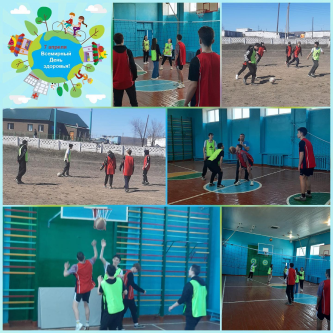
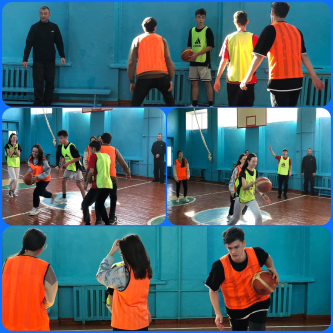
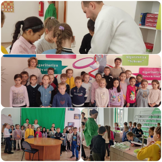

Комфортная среда
Количество учащихся в школе не более
500 человек, большинство
детей знают друг друга, каждый ребенок находится
в центре педагогического внимания, и потому атмосфера напоминает
семейную.
Средняя наполняемость классов –
20 учащихся.
Все наши дети талантливы, но у каждого ребенка свои задатки,
склонности к определенным видам деятельности,
изучению учебных дисциплин, к тому же могут отличаться темпы и
способы их учения. Мы стараемся учитывать эти
особенности.
Комфортная среда
1.Коррекционные занятия по основным учебным дисциплинам, на которых
учащиеся могут получить индивидуальные
консультации, восполнить пробелы;
2.Факультативные занятия по углублённому изучению предметов,
подготовке детей к интеллектуальным олимпиадам и
конкурсам;
3.Кружковые занятия по различным творческим направлениям (живопись,
танцы, хоровое и вокальное пение и др.)
4.Спортивные секции (футбол, баскетбол, волейбол, гандбол)



Наши учителя и тренера заботятся о здоровье наших учеников!
В стенах нашей школы часто проходят соревнования, совместные
тренировки, различные спортивные и не только
мероприятия.
В нашей школе очень много учеников добившихся огромных достижений в
спорте и не только. Все ученики представляют
нашу школу на региональных, областных и
республиканских соревнованиях!